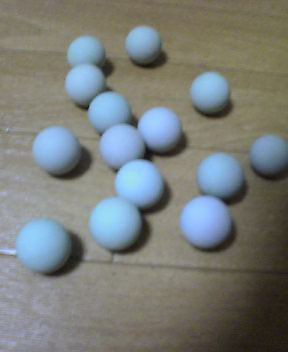
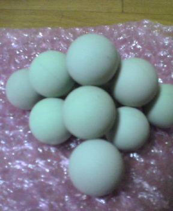
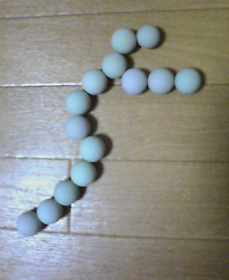
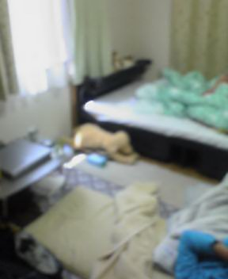
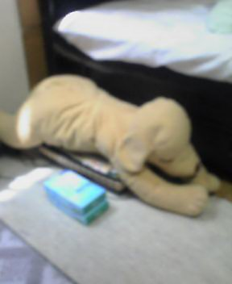
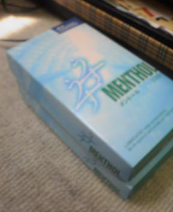
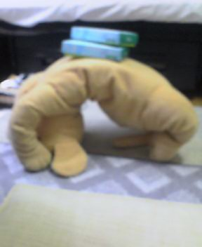
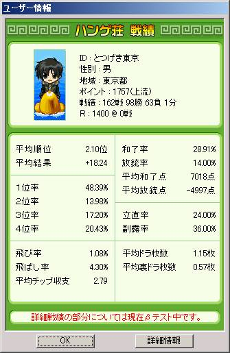
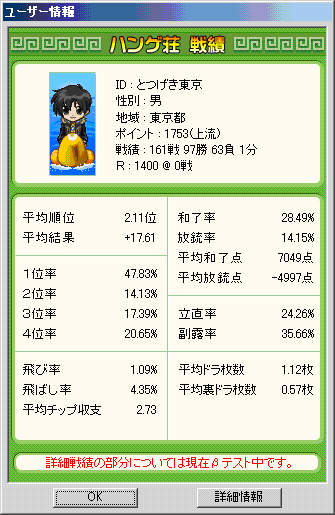

〜〜過去の雑記〜〜
16）04/12/17〜05/03/08分
15）03/08/25〜04/12/12分
14）03/03/13〜03/07/20分
13）03/01/20〜03/03/12分
12）02/09/30〜03/01/02分
11）02/07/08〜02/09/29分
10）02/01/07〜02/07/08分
９）01/08/30〜01/10/30分
８）01/06/20〜01/08/25分
７）01/05/09〜01/06/12分
６）01/03/02〜01/05/03分
５）01/02/06〜01/03/01分
４）00/12/30〜01/02/05分
３）00/12/22〜00/12/29分
２）00/12/14〜00/12/21分
１）00/11/24〜00/12/13分
（雑記の内容については、あくまでもフィクションであると捉えてください。実際の団体・個人等とは無関係です）

05/07/16
鬼の中華料理屋
昼飯をよく食べにいく中華料理屋がある。
しかしこの中華、明らかにおかしい。
例えば２人でその店に行くとしよう。
混んでいるため、外で待つことになるわけだが、店員さんが外にメニューを持ってきてくれる。
店員「今ご注文いただければすぐにお持ちできます」
凸「じゃあ……牛肉辛ラーメン」
田「おれは……あんかけチャーハン」
店員「かしこまりました」
しばらくして店内へ。
●●Ａ● Ｃ ＥＦ
■■■■ ■■ ■■■
■■■■ ■■ ■■■
Ｂ●●● Ｄ ＧＨ
（●は人、アルファベットは空席を表す）
「こちらへどうぞ〜」
さて、私たちはどの席へ案内されたでしょう？
答え：何の迷いもなくＡとＢ
おい！
空いてる空いてる！
明らかに他にいい席空いてるよ！！
それ２人でこの店を訪れた意味ないから・・・
しかしこの店ではいつものことなのである。
さて、先ほど既に頼んであるので、すぐにめしが来ると思っていてはいけない。
そんな甘い心構えでは、この店では３面もいけず死ぬ（ハチに刺されるなどし）。
店員「ご注文お決まりですか？」
さっき申し上げたわ！！
外で待ってる客が帰らないための縛りのために、注文取るフリしただけかよ！
凸「（え〜と、何頼んだっけな。牛肉……なんだっけ。メニュー見ないとわからんな……）」
メニューを見る私。
凸「（な、なにぃぃっ！？ メニューがさっきのメニューとけっこう違うだとッ！？ しかも牛肉のラーメンが……どこにも、どこにも記載されていないッ！？）」
凸「あの……牛肉の辛いラーメン……」
店員「え……っ？」
凸「（とぼけんな！！ くそ……失って初めて気付いたぜ……牛肉辛ラーメンのすばらしさに……！）」
その頃、田もまた顔面蒼白になっていた。
田「（バ、バカな……！ 外のメニューでは780円だったあんかけチャーハンが、中のメニューでは860円になっている！！ 値段が矛盾しているとは……！）」
凸＆田「（メニュー管理ええかげんすぎやで！！）」
凸「コホン……ラーメン」
田「あの……チャーハン」
店員「かしこまりましたー」
ちなみに待ち時間は運のみで、5分〜30分である。
「１度に２人分以上作らないと時間とか無駄」という理由で、同じ料理を頼む客が後から登場するまで、かなり長い間でも放置され続けるのである。
しばらくうつむいて待っていると、突然、店内に大声が響く。
店員「チャーハンの方いらっしゃいますか〜〜、あとラーメンの方〜〜」
凸＆田「（それは店側で管理しとけよ！！）」
凸（サッ！と手を挙げる）
田（バッ！と手を挙げる）
中華料理屋、強ぇ・・・
05/07/12
とんかつ和光における幸福
ＡＫＯ「今日食事どう？ ちょっと急なんだけど、７時に○○駅でどう？」
うお！
今すぐ行くぜ！
転がっていくぜ！
つまり横向けに倒れ、身体を高速に時計回りで回転させることにより、最速のスピードで進むぜ！
なんでオリンピックの100ｍとか、みんなこの方法を使わないのか？
バカだな。
もしおれがオリンピックに出たら、みんながクラウチングスタートなどと言ってしゃがんでるところを、自分のみ横向きに寝転がってピストルが鳴るのを待つね！
凸（ごろんと横になる）
審判「え〜と……」
凸「なにか？」
審判「困りますが……」
凸「なんで」
審判「その……明らかに浮いてますやんあなた」
凸「天才はいつでも理解されないものさ」
審判「なんでＮＩＫＥのシューズ履いてるんですか？ 転がるなら、靴いらないでしょう……」
凸「（ドキッ！）……わ、わかってたさ！」
審判「そもそも、転がるのはルール違反ですし……」
凸「まじで！？ そうなん！？」
審判「どうしてそれで予選突破してこれたのですか？」
凸「ま、まさか……あいつら、この晴れ舞台でおれを笑いものにするために！？ 国民が一丸となっておれをだましていたと……！？」
審判「それしかないでしょうね。ちなみに日本選手選抜のタイムは？」
凸「27秒24でした」
審判「世界レベルではすげー遅いけど、やり方の割に微妙に速！」
凸「でしょう？ 私は金メダル取りますよ」
審判「じゃあ特別に今回はそれでいいです」
（レディ……パーン！）
ゴロゴロゴロゴロ
ゴロゴロゴロゴロ
凸「うわっ……！ お前らちょっと待っ……速！ 強！ 立って走るのとかずるいで！！ なしやで！！」
さすがの私でも世界レベルの100ｍ走では、惜しくも敗れざるを得ない側面がある。
しかし、あくまでもこの方法で待ち合わせ場所へと向かう。
ＡＫＯに対する想いを表すにはこれしかない。
ゴロゴロゴロゴロ
ゴロゴロゴロゴロ
改札機あるで！！ とおれないよ！
し、仕方ない、ここは立とう……よいしょ。
ＡＫＯ「あ、凸〜」
凸「あ、ＡＫＯおひさ〜。そ、その、違うんだ！ おれはこう、さっきまで転がってきてたんやって！ 改札でさえも角の動きで何とかしようとして……でも狭くてさ……立ってるのは今だけやねん！」
ＡＫＯ「あはは、何いってるの？ 凸さんって面白いね」
凸「いやあの……本当に転がってきたのに（涙）」
ＡＫＯ「どこで食べよっか？」
凸「とんかつ和光」
ＡＫＯ「……え……」
凸「とんかつ和光」
ＡＫＯ「……うん……」
------------とんかつ和光にて------------
凸「……って感じでね(笑)」
ＡＫＯ「あははは、面白いね〜」
凸「しょせん、Ｏ氏だからなぁ」
ＡＫＯ「あははは」
凸「すみませーん店員さん、キャベツおかわりくださ〜い」
店員「はいー少々お待ちください！」
ＡＫＯ「……で、そういうのが好きかなぁ」
凸「なるほどね〜〜！ おれもそれ系は好きやね！ 恋愛系の映画はちょっと退屈やもんね(笑) あ、すみませんキャベツください」
店員「かしこまりました」
凸「……で、何かと思ったら、海やねん！」
ＡＫＯ「あははははは どうしてそこに海が！(笑)」
凸「おかしいやろ明らかに！(笑) あ、キャベツお願いします」
店員「は〜〜い」
凸「さてそろそろ時間やな……最後にもっかいキャベツたべよ(笑)」
ＡＫＯ「よくキャベツ食べてるよね！(笑) 凸さんステキ！」
凸「ふふ・・・キャベツください」
店員「……はい」
という感じで、平日ということで時間もないし、会話がはずむ楽しいデートが終了した。
と、今頭の中で妄想している。
本当のことを言おう。
今日私はＡＫＯと一言も会話していない。
デートもしていない。
実際のところ、私は今日一人でとんかつ和光に行き、ＡＫＯとデートしているような妄想をしながらもくもくとおかわり自由のキャベツを食い続けたのである。
私が真にとんかつ和光でした会話は、上のようなものではなく、以下のようなものであった。
（凸が今日とんかつ和光でした会話の全て）
凸「すみませーん店員さん、キャベツおかわりくださ〜い」
店員「はいー少々お待ちください！」
（パクパク ムシャムシャ）
凸「あ、すみませんキャベツください」
店員「かしこまりました」
（パクパク ムシャムシャ）
凸「あ、キャベツお願いします」
店員「は〜〜い」
（パクパク ムシャムシャ）
凸「さてそろそろ時間やな……最後にもっかいキャベツたべよ(独り言)」
凸「キャベツください」
店員「……はい」
キャベツ食いすぎ。
店員もさすがにテンションが下がり、セリフだんだん短くなっていっとるがな！
そしてこの妄想癖、私はいつ警察のお世話になるのか。
05/07/09
ちんこんぺ投稿作品
私も毎回参加している論説・考察コンテストの主催者であるRevinという知り合いが、罰ゲームにより「ちんこんぺ」なる意味不明のコンテストを始めた。
主として小説や２次創作で「ちんこ」に関わる文章を投稿するといった主旨のコンテスト。
じつにばかである。
そういえばセンター500点台のやつにこういう人はよくいた。
しかし、せっかくなのでと私も投稿しておいた。
投稿作品「ペニス的な問題に寄せて（論説）」
ネタということでざらっと書いたもので、推敲とかされてませんのでそのつもりで。
05/07/08
予定はつまっています
※05/07/03の日記を先にご覧ください
以前職場のＯ氏との飲み会で知り合ったＡＫＯさん。
かわいい。
そこでメールにて、デートに誘ってみることとした。
今日は８日。
凸「今日、めしでもいかが〜」
Ａ「ごめーん、今日は予定あるの」
凸「いつ空いてる〜？」
Ａ「１９日までつまってるから２０日以降ならいいよ〜。２２日と２８日はダメ」
いや普通に考え、つまりすぎだろ。
明らかにつまってないところをつまってることにしてるだろ！
しかしここで諦めてはいけない！
わかっていながらも、それでも押す！
凸「じゃあ２３日はどうよ」
Ａ「２３日から２４日まで群馬で友達の結婚式があります」
お前！
さっき20以降の、22と28以外は空いてる言うたやん！
２３日（土）を提案した時点で、２４（日)も一緒にダメにしてきてるよ！
群馬とか無駄にリアリティ出してるところがなおさらあやしいで！
このアマァァアア！
私は切れた。
職場の昼休みだというのに、怒り狂い切れまくった。
そして巨大化した。
ゴゴゴゴゴゴゴ（巨大化）
巨大化した私の身体は職場の壁を軽々と突き破り、霞が関全体に行き渡るほどの渾身の声を張り上げた。
巨大凸「シュゴオォォ。フー。フー。」
同僚女性Ａ「あら。東北さん、いつになく巨大ですね」
同僚女性Ｂ「なにしてるの、東北さん」
同僚男性Ｃ「おい凸、変やで」
係長Ｄ「東北さん、でかくて邪魔だよ」
室長Ｅ「東北くん、うざいよ？」
シュルシュルシュル。
各方面から思わぬ批判を受け、小さく戻った。
凸「すみません、ご迷惑おかけいたしました」
くっ……これが政治的圧力か……。
私は何のために巨大化したのか。完全に無駄だった。
誰か・・・誰か私の心を癒す者はおらぬのか！？
ド「今こそ旅に出られよ！」
凸「うわ、ドラえもんまだおったんかい！！！」
ド「旅に出られよ」
凸「……前向きに検討するわ……」
ド「まあ、出ても何の解決にもならんけどな」
凸「人間にとって未知であり、そして神秘の世界でもある海の底に沈めるぞお前」
ド「諦めて別の子にしろよ」
凸「うん、そうします・・・。んじゃあ何か役立つ道具・・・」
ド「ない」
凸「即答かよ！ 前ドラえもんの漫画で見たよ！ その家に入った２人がラブラブになるとかいういやらしい道具があったやろが！ 子供に夢や希望を与えるためではなく、ほとんど作者の願望として作られたあの道具出してよ！」
ド「あのドウグ、いま、ここ、ない。前、こわれた」
凸「なんでカタコトなっとんねん。何人やねん」
ド「ブラジル人ブラ。あの道具は壊れたブラ。」
凸「どんだけブラジル人に偏見もっとんねんそれ・・・」
ド「まあ冗談はともかくさ、道具に頼らず、新しい恋を見つけてきなよ。応援してるからさ」
凸「この役立たず！」
ド「しょうがない・・・道具出すか」
凸「おお！？」
ド「『盛り上がり応援機』〜！ これを使うと、ただの応援ではなく、より盛り上がった応援をすることができ・・・」
凸「すみやかに消滅しな」
ドカ バキ グシャッ！
ｽｯ！ｽｯ！ｽｯ！ｽｯ！ｽｯ！
何の音よΣ( ´O`)
05/07/06
ＰＣ担当として
私は一通りＰＣに詳しいため、職場でＰＣ関係で何かが起きると呼ばれる。
・ＰＣその１
おばはん「これ・・・カナ入力になって直らないの」
凸「ああ、Alt＋かな で直りますよ。ほら。」
おばはん「わあ、本当。でもどうしてこうなったの？」
凸「たまたま入力してるときに、このボタンに手が当たったとかでしょうな」
ふう、解決解決…
おばはん「……ってません」
は？
おばはん「私そのボタン押してません」
押したからそうなっとんねやがな。
凸「そうですか？ 自然になることはないんですけどね」
おばはん「絶対おしてません」
うるさいわ！ 絶対押した！ 2000万くらい賭けてもいい。
凸「はぁ・・・」
ババア「そのボタンだけは押してません！」
お前がワニに噛み殺される様子を紙粘土で独創的に表現し持参するぞ。
ある特定のボタンを押していないことを常に意識しながらタイプするバカがどこにいようか。
凸「まあ、たまにありますよ（ボタンを押していないのにカナ入力になることが、ではなく、ババアが無駄に意地を張ることが。）」
--------------------------------
・ＰＣその２
職場のとある女性が、自分のＰＣでWINDOWSのログイン画面が点滅している様子を見て、ひどく恐れおののいた様子で私を呼んだ。
このような点滅は、いかなるウイルスによってもたらされるのか、ログイン画面における不気味な挙動を引き起こす悪意あるプログラムはどのように除去できるのか、としきりに促す彼女の視線は、テンキーパッドのエンターキーの上にそれとなくのしかかり、一定の重みを与え続けている書類ファイルには向いていない。
ソフトウェア工学的というよりもむしろ物理学的な要因によって生じているその現象を遠まわしに解明してみせながら、社会における「理系」が、「文系」に対していかなる絶望的な感情を抱かざるを得ないかを理解した。
05/07/03
風邪ひいた
金曜の昼くらいから、熱が出始めた。
どうやら夏風邪らしい。
風邪を引く理由を熟考してみるに、以下の３つのうち１つが答えだとわかった。
・凸があまりにもかっこよく、頭がよく、優しく、またＪ−ＷＡＬＫをカラオケで歌っていたため、神々の怒りに触れたから
・凸があまりにも定時に帰りすぎているため、毎日深夜残業の同僚Ｏ氏が夜な夜な呪いをかけたから
・エアコン設定温度18度でつけっぱなしで寝ていたから
今となってはどれが理由だったか確かめる術は全くないが、とりあえずまだ喉が死ぬほど痛い。
凸「ド〜〜ラ〜え〜も〜ん(ﾉ_･､) 風邪引いたよぉ」
ド「なんて？」
凸「おい聞いとけや！ 助け求める大事な大事なセリフや！ 渾身の力こめとったわ！」
ド「ごめんね凸くん。もういっかい言ってよ」
凸「ド〜〜ラ〜……(ﾉ_･､)」
ド「そこは聞こえた！ どうせ『ドラえもん』でしょ？ その後！」
凸「うざ……」
ド「はやく。」
凸「風邪引いたよぉ」
ド「もう凸くんは。しょうがないなぁ。『通りぬけフープ』」
凸「むっ……？ それさ、さほど適切じゃなくないか？ 『お医者さんカバン』とかあるやろ？」
ド「大人の事情、言い換えると既に第二次性徴を迎えた人々の事情で、『お医者さんカバン』を含む全ての便利な道具が壊れているのさ」
凸「なんやうっとうしいなお前……ほんで通りぬけフープどう使うん」
ド「えーとね（得意げに）」
凸「あ、先言うとくけど、これ使って最短ルートで病院いけとか、薬屋に忍び込めとか、そういうベタなオチやったら殺すよ？」
ド「（ビクゥッ！）」
凸「で？ どう使うの？」
ド「…………」
凸「10秒待つ。ちゃんとオチ考えろ」
ド「…………」
凸「はい、時間です」
ド「…………」
凸「…ん？」
ド「た……旅に出よ！」
凸「………は？」
ド「 旅 に 出 ら れ よ ！ 」
凸「…………なにが？」
ド「 旅 に 」
（ドカッ！ メリメリメリバキッ シュゥー ﾋﾟｰｶﾞｰｶﾞｰ）
凸「オチないくせに声の勢いでごまかすな！ 死ね！」
ド「い、いじめ……かっこわろし（ガクッ）」
もはやドラえもんに頼ることなどできやしない。
仕方ない。友達に電話してみよう。
凸「おいす、ひさしぶり」
Ｈシンカ「よう」
凸「風邪ひいてんけどさ。どうすればいい？」
Ｈシンカ「そうやな。まずは、風邪を引いていないと仮定してみろ」
凸「なんだお前は。秘孔つくぞ」
Ｈシンカ「いいから仮定しろ」
凸「わかった。おれは風邪を引いていないと仮定する」
Ｈシンカ「よし！」
凸「いや、なにがよしやねん」
Ｈシンカ「想像してみろ・・・風邪引いていないと仮定すると・・・どうだ。」
凸「おお！？ もしおれが今風邪を引いていないとすれば、セキは出ないし、喉も痛くない・・・！？」
Ｈシンカ「そうだ！ その通りだ！」
凸「最高やん！」
Ｈシンカ「まだ驚いてはいけない。さらにだ。君が今、20億円持っていると仮定してみよう。」
凸「うわ、ええの！？」
Ｈシンカ「君の自由だ。好きに仮定してみなさい」
凸「ありがてぇ！！ 20億円！！ 好きでもないバイクを4台くらい買ってしまいそう！」
Ｈシンカ「ふふ、それもまたよし。次に、ある四角形の辺の長さが全て同じｘだと仮定しよう」
凸「なんと！！ その四角形は・・・正方形またはひし型やん！！」
Ｈシンカ「そうだとも。」
凸「うわああ、もう最高やん！！」
Ｈシンカ「喜んでくれて私もうれしいよ」
凸「すげー助かる・・・」
Ｈシンカ「最後に、君がＳＭＡＰの一員であると仮定しよう！ すると・・・」
凸「おおおおおモテモテ・・・」
Ｈシンカ「矛盾するな。つまり仮定は間違っていたと気付く」
凸「おっしゃる通りだな。寝るわ。・・・またな」
05/07/01
モテ期
Ｆさん（女性）と私は、大変お互いのことを思いやる関係である。
Ｆ「最近暇でさーなんか友達も一緒に飲みにいってくれないしー」
凸「ふむ」
Ｆ「なんか何もかもつまんないんだよね……」
凸「 折 り 紙 で も 折 れ よ 」
Ｆ「くっ……！」
Ｆ「んで、凸は最近どうなのよ」
凸「あんまおもんないのう」
Ｆ「１生に３回モテ期が来るから大丈夫だよ」
凸「まだ１回も来てへんねんけど！」
Ｆ「凸は一生来ないんじゃない？」
凸「お前が今３回来る言うたんや。なんでおれだけ法則の例外扱いやねん！」
Ｆ「けけ……」
凸「ぐっ……」
05/06/30
ビザの発行に関する疑問
どうもこの世は全ておかしい。
数年前、海外旅行に行くにあたり、大使館にビザをもらいにいった。
発行の申請をその場でしなければならず、しかも1週間後に取りに来いという。
なんと不便な。
と思っていたら、
受付「キョウホシイデスカ？」
当たり前や。
受付「1000円でキョウデキマスヨ」
できるんやったら金とらずやれや！
しかしまた出向くのは面倒な上、交通費もかかってしまう。
凸「今日してください。何時ごろできるでしょうか」
受付「５フンデデキマス」
おい！
５分でできる作業を１週間引き延ばしておいて、1000円とるな！
せめて隠せ！ あけっぴろげすぎるわ！
まあ当日受取りの場合増額する、というのは一般的に珍しくないようだが。
煮え切らない思いを残したまま、作業を見ていた。
さすがに1000円ぼったくった罪悪感からか、かなり急いで処理してくれている。
しかし急ぎすぎたのだろうか。
受付は、日付を間違って記入してしまっていた。
てめー書き直しとかになってんじゃねーよ。また５分待ちかよ！
・・・ん？
いやいやいや、こいつ修正液で直し始めたで！
行政文書をお手軽に修正液で直すな！！
修正液使ってええなら、後から名前でも何でも偽造可能だろうが！！
そんないいかげんじゃだめやろ！
たのむ！ 書き直せ！ 書き直してください！
直されなかったヽ(´▽`*)/ ←
なお、領収書に書かれた金額は、私が支払った金額より1000円少なかった。
きっと、色々ある。
05/06/29
詐欺
先日、会社におかんから電話がかかってきた。
母「ハァ、ハァ。ああ凸？ 今な、俺、俺、いうて、わいせつ行為で捕まったから示談金がいるって電話きてな」
なるほどね！
いまどきオレオレ詐欺の電話がきたと。
それを息子に伝えるために会社に電話したと。
お値打ちもののバカである。
凸「そんなことで電話かけてくんなや（心の声：おとんの退職金の一部よこせや）」
母「声ではあんたかなぁ、と思いかけてたんやけど、ひらめいてな」
母「誕生日いつ？ って聞いたら、無言で切られたわ。」
それで得意げなるな！
犯人が誕生日把握してたらどないしてん！
「わいせつ行為をしない人」よりも、「誕生日が言える人」の方が息子を確認するための確かな情報かよ！
凸「あほか。もう切るで（心の声：ところでおれ、宝くじで1等２億円当たったら、やはり即辞表出すべきだろうか）」
母「いや。あんた仕事頑張ってる？」
凸「頑張るためにはこの電話を切る必要があるねんけど（心の声：実は組違いで10万円なのに、２億と勘違いして辞表出してもうたらどうしよう）」
母「ああ、頑張ってるならええねん」
凸「切るで（心の声：もう洗いざらいぶちまけて、「係長すみません！ 辞表取り消しです！ 組違いでしたぁ！！」 言うしかないな。覚悟したぜ。おれも男だからな）」
母「あんた……その……警察いってへんな？」
確認するな。はよ信じろお前。
05/06/28
正論
幼稚園のころの記憶は、割と鮮明に残っている。
何かの容器のフタだろうと思うが、円盤形で、へりが少し上がった、お皿のような形の赤色のプラスチックの物体が家にあった。
子供はそういう何でもないものをひどく気に入ったりするもので、毎日毎日その赤いフタで姉と遊んでいた。
ところがある日から、姉は、私がそのフタを触ることを禁じ始めた。
なんであかんねん。
なんというひどい姉。
私のフタは！？
フタに触れる権利は！？
しかし説明されることのないまま、数日が過ぎた。
そこで私は、母が見ている前で姉のフタを取ろうとする暴挙に出た。
姉の態度を母に見せつけ、しかってほしかったのである。
私がフタに手を伸ばした瞬間、姉は叫んだ。
「凸あかん！ それハナクソ集めてるから！！」
そんな理由かよ！
それがフタ禁止令の全てか！
先言うてくれたら、おれもそんなフタ触らへんで！
集めているハナクソを守る必死さのあまり、つい母親の前で、隠しておくべき事実を言ってしまったのだ。
でもさ。
よりによってそのフタでやるな！
他のフタでやれや！！
おれの大切なやつやそれは！
ともあれ、姉は、母親にこっぴどく叱られていた。
当然である。君はそれだけのことをしてきたのだ。受け入れるがよい。
しかし何より、母の言葉が印象的だった。
母「はなくそなんて、集めたら、いかん！」
死ぬほど正論やな、お前(笑)
05/06/27
ボールを7つ集めると願い事がかなう件
大学時代、ネット麻雀を死ぬ気でやってたころは、麻雀に負けるごとにマウスを投げていた。
「ついてねーよハゲ！」
などと叫びながら、壁にマウスを放り投げるわけである。
当然、マウスが壊れてしまうことがある。
壊れたマウスは不要だが、マウスボールはちょっと手触りがいいので残していた。
そのような必然的な過程を経て、私の家にはマウスボールがたまっていくことになったのである。
だが、私は聞いたことがある。
ある種のボールを７つ集めると龍が現れ、１つだけ願いをかなえてくれるらしい。
私はそれを信じ続け、マウスボールを集め続けた。

みよ！ 14個！！！
２匹の龍があらわれてもおかしくない数である。
今こそ時がきたのだ。
部屋の中で声の限りを尽くして叫ぶ。
凸「いでよ、シェーンローーーーン！！！！！」
・・・でねぇ！？ うそ！？
２匹どころか１匹もでねぇ！？
ふざけんじゃねー。
私は東北帝國大學工学部通信工学科卒だ！！
自然科学に対する私の知識が間違っているはずがない！！
シェンロンは・・・きっと、いる！！
積み方・・・積み方だな！？

凸「シェンロンキターーーーーーーーー！！」
・・・・・・こねぇ！
なんでこねえんだシェンロン・・・おれの願いをかなえてくれよ！
おれのはるかな遠い夢を！！
あと、こないだ飲み会で飲んだ子がまじでかわいく、デートしたいってことを！←
しかし私は天才だった。ひらめいた。
シェンロンよ。君の言いたいことがわかった。
並べ方が気に食わないんだろ！？

シェンロンっぽく、な。
え〜と、結果だけを申し上げますと、この後３時間ほど試行錯誤し、各方面の意見を取り入れた結果、マウスボール邪魔なので捨てました←
05/06/24
適切な処置
先日、職場の同期と飲んだ。
時間がかなり遅くなったため、飲んでいたうちの一人、Ｍ君の家に泊まろうという話になった。
Ｍ君の家に到着。
同期なので、別に気を遣う間柄ではないのだが、一応女性もいるということで、Ｍ君だけ先に家に入り、不適切なもの――干してあるパンツやら、場合によってはエロ本など――を片付ける。
Ｍ君「よーし、片付いたよ。入って」
お邪魔します。

Ｍ君の部屋の全景がこちら。
まあ男性の一人暮らし、こんなもんだろう。
なぜベッドの横に犬のぬいぐるみが置いてあるのか謎だが。

――むっ？ こ、これは・・・

めっちゃコンドームやんけ！
もっともしまうべきものを、しまいわすれてるよ！！
ベッドからすぐ手の届く場所にあって、リアルで嫌やねん！
しかもなんで２段重ねやねん！ そういう使い方普通せんやろ！
「うすうす」言うな！！
・・・あまりにつっこみどころが多すぎ、もはや私の力では処理しきれない。
女性陣も大爆笑である。
ので、

とりあえず犬をブリッジさせその上に乗せておいた。
この犬の、弧を描く美しいそり具合をみよ。
適切な処置といえよう。
05/06/23
事案の発生
ご存知のとおり、コンピュータは水に弱い。
お茶を飲んでいてキーボードにこぼしたりすると、即座に壊れる。
デスクトップならキーボードを買い換えるだけでいいが、ノートだと一体になっているため、マザーボードまで逝ってしまうことが多い。
そうなると10万以上かかってしまう。
職場でもけっこう、そのケースがある。
『
【連絡】お茶こぼし発生の件について
本日、○○課において、下記の通りお茶こぼしが発生しましたので情報送付します。
記
発生時刻 ： 午前10時
処置 ： キーボード交換
費用 ： 自己負担
』
やたら堅いねん！ 文章が！！
これやから公務員はいややねん！
次のような題名のメールもある。
【連絡】コーヒーこぼし発生の件について
【連絡】ジュースこぼし発生の件について
飲んでたものの種類ちゃんと書くな。その情報は何の役にたつねん。
タイトルは「コーヒーこぼし」なのに、メール本文は「お茶こぼし」のままになっているという矛盾が生じていたこともあった。
コピペミスの危険を冒してまで飲み物の情報を盛り込むことが、果たして本当に国民のためになっているのでしょうか。
などとつっこんでいると、先日きたのがこれ。
【連絡】液体こぼし発生の件について
超あいまいになってるで！？Σ(；´O`)
それでええんやったら毎回「液体こぼし」でええやろが！
今までの努力が見事に無駄ですやん！
だいたい、何こぼしてん……みそしるとかか？
いや、ひょっとして酒！？ ・・・ないとも言い切れない。
酒こぼしと書いてしまうと問題になるからということで。
「嘘は書いていない」が、自分たちに不利な情報はあくまでも隠す。
やっぱり国民のためになってへんで！
こうやって公務員の不祥事は続いていくのであった（感動）
※公務員の仕事ぶりや、不祥事等についての記述、それに対する私の感想等は、あくまでもジョークです。誤解なきよう。
※公務員のみなさんは頑張ってるヨ♪ おれ以外な。 あ、いやこれもジョークですってばヽ(´▽`；)ゞ
05/06/23
内容を見ている
小中学生にとって、先生を嫌がる理由として「えこひいき」「不公平」がある。
中学のころの社会の先生は、授業のたびに「予習ノート」を見てまわり、それにハンコを押していた。
できのよさに応じてハンコが２つもらえたり、３つもらえたりする。
しかし、どうも女子の方が採点が甘いように思われた。
だが先生は「男子より女子のほうが字がきれいだが、関係ない。内容でみている」と豪語していた。
その割には１人のノートを5秒くらいずつしか見てないような・・・。
そこで私はある実験をした。
女子生徒のノートを丸々写して授業に臨んだのである。
結果。
その女子＝ハンコ３つ 私＝ハンコ１つ。
不公平の嵐かおまえ。
マスター・オブ・不平等か。
「不公平シール」作って貼りまくるぞ。
不平等さを俳句にして詠むぞ。詠みあげるぞ。
しかもこのおっさん、どうも場当たり的である。
初期のころはハンコ２つでもかなりすごかったのに、だんだんハンコの価値がインフレしていき、学期末には平気でハンコ12個などが飛び出していた。
最初のころのハンコ３つとかゴミやよ！！
ドラゴンボールかよ！
そのことについてある生徒が指摘すると、
「最初のころより、みんなまとめるのがうまくなった」
などと言い訳している。
愚か者が。
ハンコの数の変化をエクセルにこぎれいにまとめ、お前のダメさを簡潔にプレゼンするぞ。
金魚すくいにおいては、店員が見てないスキにバケツですくうぞ。
夜な夜な神社に足を運び「かわいい彼女できますように（女豹でも可）」って祈り続けるぞ。
・・・ふう。
ま、おれの行動が基本的におかしいのは、全部この先生のせいだってことで！
05/06/22
同僚ネタ続きで申し訳ないが
05/06/03の日記でも書いた同僚、田（仮名）に、職場でメールを打った。
「
田へ
おつかれ。
仕事の話ですが、○○課の来年度の増員数わかりますか。
それと、××の件の資料になりそうなものがあったらください。あったらでいいよ。
P.S. □□がバイトの子と飲み会するらしいぞー。
凸より
」
15分後。
返事きた。
うむ、なかなかの事務処理能力。
「
凸へ
おお、相手何歳くらい！？
凸もいくの？
」
事務処理能力低！！
躊躇なくそこにのみ返事書くな！ 恥を知れ！！
いますぐお前だけが民営化されるべき。
05/06/03
昼食において
本日の昼休み前のこと。
同僚の「田」（仮名）に電話し、本日の昼食に関する打診を行った。
プルルプルル……ガチャ
田「ハイ、○○局総務課、田です」
凸「おーっす。事務的やなお前！」
田「凸か」
凸「おっし！ めしいこうぜめし！」
田「……」
凸「中華いこ中華！ 神に選ばれし者よ！」
田「……テンション高くてうざ」
いきなり、私の人格を否定する動きがみられた。
凸「中華を食うべきだろうが！」
田「仕事忙しくてな。今日はむり。じゃあ（ガチャ）」
くっ・・・（踊りながら）
しょうがない。
こいつの他に会社でつるむやつ・・・うーむ、女性専用車両に乗る権利はあるが、その権利を行使すると笑われるのではないかと危惧されるタイプの同僚の女性（Ｆさん）に電話してみる。
凸「やあ元気！」
Ｆ「なんだ凸か・・・」
凸「なんだではない！ めし！」
Ｆ「……どうせまた中華でしょ」
この女、ブスのくせにかなりの分析家である。
凸「ち、ちがうわ。今日はパスタがいいなと思っててね！」
Ｆ「そう。中華なら行ってもよかったんだけど」
凸「いや、でも中華もいい・・・」
Ｆ「その迎合ぶりが嫌なんだけど」
凸「じゃあパスタだ！」
Ｆ「じゃあ今日はやめとくわ。ごめんね」
なんでおれの周りはこんなやつばっかりなんだよう！
05/05/31
記念に

トップ率記録をば。
05/05/29
代引の件
Amazonで書籍を購入。
蓮實重彦著『反=日本語論』
同『スポーツ批評宣言あるいは運動の擁護』
寒川猫持著『猫とみれんと』
くすきはいね著『『勘。』』 ←引用しにくいタイトルやめてくれよ！(笑)
うーむ、さすが知的！
凸さんｽﾃｰｷｰｨ！ 抱いてぇ！ 結婚してぇぇ♪ そして保険金残して死んでぇ♪
・・・まあよい。
代引で今日とどいた。
よう宅配の兄ちゃん。今日もいきがってるかい？
なに？ 5000円？
はした金だな！
私に請求するなど無礼とさえいえる金額だよ。
時代が時代なら切腹、打ち首、園芸のコンボだぜ。
千円札を、と。
１枚、２枚、３枚。ん？
え。いやなんで3000円しかないの！？
ま、待て。これは何かの間違いだぜ。
もう少しチャンスをくれ。
１枚、２枚、３枚。・・・いやいや。
１枚、２枚、３枚。ぐっ！
１枚、２枚、３枚・・・
何度数えても……3000円……！？
やばい！！！
数え方が悪いのか！？
アン、ドゥゥ……（充分ためて）トロアァッ！！…ハァハァ
なにぃぃ、これも効かないと言うのか！？
くっ・・・（瞳を閉じて）
タメが足りなかったようだな。
まあ、トロアの次わかんないしこれはミスだ。
これはどうだ！
１枚、３枚、５枚。５枚！！
おお！ この数え方なら３つで5000円になるではないか！（天才！）
同時に、１枚、１＋ｎ枚、１＋２ｎ枚・・・という数え方をすると、Ｍ枚の1000円札が｛1000＋1000ｎ（Ｍ−１）｝円になることまで証明！！（天才！！！）
はい兄ちゃん、5000円。つりはいらねえよ。
なにィ、足りない？ バカがッ！！
目の前でちゃんと数えて出しただろうがよッ！
「お金がたりません」
お前は武器屋か！ 事務的な言い方しやがって。
しね！ しね！
具体的には、裏山に冒険に行き穴に落ちるなどしてしね！
「大変申し訳ありません。手持ちがありませんので、後日お願いします・・・」←
05/05/29
忍者
忍者Ａ「山」
忍者Ｂ「川」
忍者Ａ「・・・よし」
カチャリ。
忍者同士が、仲間であることを証明するための合言葉。
しかし「山」「川」はあまりにも平凡すぎるだろう。
「全部川言うときゃ運のみで当たるんちゃうんでござる」
などとつっこまれるのがおち。
だからといって、無闇に合言葉をいじってもよくない。
忍者Ａ「山」
忍者Ｂ「女体」
忍者Ａ「・・・よし」
カチャリ。
もうちょい威厳を考えろ。
忍者Ａ「山」
忍者Ｂ「プレイステーション２」
忍者Ａ「・・・よし」
カチャリ。
なに現代社会になっても忍者続けとんねん。需要ないわ。
忍者Ａ「山」
忍者Ｂ「強力な」
忍者Ａ「・・・よし」
カチャリ。
形容詞やめろ。
忍者Ａ「山」
忍者Ｂ「まつ」
忍者Ａ「つなみ」
忍者Ｂ「み・・・み・・・みかづき」
忍者Ａ「き・・・きりん・・・あっ！」
カチャリ。
負けたら開けるんかよ！
忍者Ａ「山」
カチャリ。
お前何のために「山」言うてん。
忍者Ａ「山」
忍者Ｂ「川」
忍者Ａ「え？」
忍者Ｂ「海？」
忍者Ａ「・・・」
忍者Ｂ「・・・鳥？」
忍者Ａ「・・・よし」
カチャリ。
たぶん忍者Ｂ敵やろうが。
05/05/28
論説コンテスト？結果発表
05/05/16の日記で宣伝したやつですが。
友達がＨＰでやっている「論説・評論コンテスト」の企画。
「お題」に対して論説・評論を書き、投稿。
投稿された作品は匿名で公開され、読者が採点を行う。
投票期間が終わると作者名・点数等が一斉に公開される・・・てなやつ。
第一回お題は「2005年4月25日のＪＲ福知山線脱線事故。悪いのは、いったい誰なのか！？」
これの結果発表が本日ありました。
結果がこちら
まあ当然ダントツですよ ( ~-~)y- 作家だし。←
ふー運のみで勝ててよかったぜ・・・２位の作品に勝てる気がしてなかった(笑)
どうも盛り上がりに欠けてるので、みなさんぜひ第二回には参加してみてください。
本文の方は黒とつ内にもリンクがおいてあります。
05/05/27
ハンゲ成績

ＨＩ東風戦クイタンアリで時々やってみてます。
トップ率50％に到達するまで頑張ります ← もう落ちる一方だろ
05/05/16
論説コンテスト企画
れびん君（オタ知り合い）が、こんな企画を始めました。
れびん君がお題を出して、それに対してこちらがまじめに論述し、投稿します。
シメキリが終わると、匿名にて投稿された文章が公開され、参加者等が各々を「採点」します。
結果発表の時期に、名前や得点が公開されます。
第一回お題は「2005年4月25日のＪＲ福知山線脱線事故。悪いのは、いったい誰なのか！？」
こぞって参加だ！
05/05/02
宝くじ！！
職場の同僚で、とてもイケメンの友達（あ、友達はいないんだった。仲間ね）がいる。
以前に宝くじを一緒に買ったのだが、今日、当たり確認をしてきた。
宝くじ交換所にて。そのイケメンが急にかなりでかい声で叫ぶ。
イケメン「なに！？ たった1200円・・・だと！？ この私が！？ ばかな・・・」
朱に交われば赤くなる。
普通にしてればもてただろうに、私のような男とつるむからこういうギャグキャラ（しかも寒い）になってしまうのである。
「外れたのか。自業自得。おろか。タマネギ並のＩＱ。また、BTB溶液。華麗なる私の人生とは格が違う。」
とさんざん見下して私の当選金額をチェキラッ！
うわ200円！？
うわ！？
イケメンの一言「お前、残念な28歳だな」が心に染みた１日だった。
05/04/20
明智光秀におかれて、歴史的名言はいかにして語られたか
光秀「ねえ・・・敵は本能寺にいるんじゃないかな？」
家臣「は？ 何言うてるん。あそこには信長様がいるやろが」
光秀「いや・・・ちょっとそんな気がしたからさ」
家臣「いいからはよ出陣しようぜ」
光秀「まって・・・でも場合によっては本能寺にいるんじゃないの？」
家臣「おるわけないがな」
光秀「もしいたとしたら……って考えたことある？」
家臣「ないわ」
光秀「じゃあきみ、いないと証明できる？」
家臣「うざいなおまえ。」
光秀「て、敵は・・・ッ！ 敵は本能寺・・・」
家臣「お、みてや。猫おる。かわいいなあの猫」
光秀「あ、聞いて・・・。大事な話があるんだよ」
家臣「なんやねんな」
光秀「・・・」
家臣「はよいうてや。時間ないねん」
光秀「・・・敵は本能寺にあり！！」
家臣「 ･ﾟ･･ﾟ･(ﾉ∀`)σｱﾋｬｯﾋｬｯﾋｬ 」
05/04/15
「カメラつき携帯」という死語
４年ぶり？くらいに携帯を買い換えた。
カメラがついてるなんて、初めてだ。
とりあえず自分を撮ってみたが、カメラが壊れているみたい。
何度とってもブサイクに写る。
おかしいぞ！
そういえば昔デジカメを買ったときもこれ思ったなぁ。
解像度が上がれば上がるほど、ますます鮮明にブサイクに写る。
社会がおかしい！！！
05/04/05
病気と権力２ （04/04をお先にどうぞ）
「病院」ができたことで病人が増えた。昔ならば病気と認知されなかった様々の不調が「病気」というカテゴリに押し込まれ、治さなければ「健康でない」という烙印が押されるようになったからだ。
だけれども多くの人は昔は慢性的に栄養失調であったろうし、過酷な肉体労働による「職業病」もあったろうに。
医学の進歩によって「肉体的な」病気の多くが克服された今となっては、「心のやまい」などが作り出され、解決されねばならない何かであるようにみなされている。
心のやまいが取り除かれれば、社会の様々な不安や犯罪がなくなると人々の多くが信じたがっている。
いや、人々は不安を求めてさえいる。
昔なら情報が伝わらなかったために誰にも認識されなかったような「問題」がマスコミに取り上げられ、やれ政治がどうだ、あの凶悪犯罪は教育の問題だと騒ぎ立ててみせる。
実際には、現代では考えられないような「凶悪犯罪」についても、昔の方がたくさんあっただろう（例えばヨーロッパでは、冤罪にもとづく公開処刑、それをお祭りとして楽しむ民衆、という光景などは日常茶飯事であった。上流階級では近親相姦も珍しくなく、魔女狩りの際には教会の牧師たちはこぞって気に入った女性を魔女と決め付けて教会内でレイプして焼き殺した）。
今まで問題でなかったものを、それと独立の何かが起きたときにここぞとばかりに問題とし、それへの解決策を提案するという構造については、05/04/04の日記でふれたものもあてはまる。
もちろん、それを駆動力として技術が発展してきたのは事実であって、多くの人が「別に今のＰＣの性能で不自由ないよ」と感じていても、ＰＣは改善され大幅に処理速度が向上してきた。
しかし困ったことに、解決する方法など初めからないか、少なくとも自分の生活では全く手に負えないような何かを問題として設定して、それに対して技術的でない全ての提案を行うことで、権力を高めようとする連中がいる。
１つの問題を捏造すれば、１つの弱みを作り出すことができ、１つの解決策を提案できる。これは便利である。
これを意識的にやるのが政治家（せいじや）で、無意識的にやるのが大衆である。
私たちはみな、心のやまいを持っている。身体について「病気」ではなくともいくつかの不調を持っている。
現代社会の秩序に回収されるはずもない、ドロドロしたカオスをかかえているのである。
凶悪な監禁強姦殺人事件が起きると、それを憂う人々がいるのと同時に、それ系のエロビデオが嫌になるほど流通してしまう。
何かが起きるたびに「異常」の一言で秩序の中に押し込もうとするのはまちがっている。
それが不可能だからこそ、さまざまの「問題」が噴出するわけである。
情報が行き渡るようになって、みかけ上の「問題」は大幅に増えた。増えたけれども、それほど事態が悪化しているわけではない。
常に正常でなければならない、とするなら、世の中が正常に機能するはずがない。
正常でありたいなら、まずは正常とはどういう状態であるかをよく理解することが重要である。
05/04/04
病気と権力
何かの身体の不調を訴えたとき、待ってましたとばかりにさまざまの注文をつけてくる人がいる。
例えば、不眠であるといえば、パソコンをしているせいだからパソコンをやめろ、運動不足だからマラソンをせよ、牛乳をのめと口うるさい。
親が典型的で、私はそのようにしてPCを取り上げられ、ファミコンとテレビと漫画を禁止にされ、勉強机しか残されなかった。
もちろん、それらは不眠に対して何の効果もなかった。
毎日フトンに入ってから3時間も4時間も眠れない毎日だったが、大学生になって医者にいき、不眠の原因が単に体質の問題であることを知った。薬をもらうと毎日快眠できるようになり今に至る。
同じように私はいくつかの病気を経験してきたが、そのたびごとに私の何がしかを自分の好みにあわせよう、たまたまその「ヒント」が当たった場合に恩を着せよう、あるいはとにかく「助言を与える」ことを楽しもうとしてくる輩が多かった。親もそうだったし、友達もそうだった。
私はそのような行動が嫌いである。
彼らにとって、私がまさにかかえている体調的な問題など本当にどうでもよく、だからこそ私が自分の体調について色々な文献等で調べた初歩的な知識を全く持たずに、あれが悪いこれが悪いこうしてみてはとその場で思いついた愚劣な案を述べ立てるわけである。できればその弱みを利用して、自分が（科学的理由があるわけではなく、蒙昧な信念のせいで）気に食わないことを相手にやめさせようとする神経がうさんくさい。タバコと無関係な病状について、「医学的根拠はないが、タバコをやめることが悪いはずがない」などと本気で言ってくるのもずうずうしい。それがダメなのだ。ひょっとすればタバコの成分が菌を抑制しているかもしれないではないか。ひどいのになると悪影響を及ぼすことが医学的に示されている事柄を平気で言ってくる人までいる。いいかげんすぎる。
ある不調について述べる。そうすると親が「Ａするからだ、Ａをやめろ」と言う。そこで医者にいき、その不調がＡに起因するかどうかを尋ねると「まったく関係ない」と断言される。そのことを報告すると「そもそもＢも悪い」と言われる。同じようにＢも無関係だとわかる。すると今度はＣしろと言ってくる。しかも、その「原因」とやらは、すぐに効果を表してはならない。親が「1ヶ月は続けろ」と言ってきたので続けたことがある。終わってみて何の解決にもならなかったとき、親は平気で期間の延長を提案してきた。そればかりか「全体的な生活をもっとよくする」などと、この機会にすべてを親の思うとおりにしようとしてきた。お前の発言など信頼できるか。どうしてお前らの行き当たりばったりにこの私を引き込むのか。愚昧は君たちだけで充分である。
他人の不安に付け込んで効果のない壺や宗教的儀式を売りつける商法と同様の意味で、しかし直接儲けにつながらないにもかかわらずそれを自己満足のために楽しむという意味で、「健康アドバイス」はもっとも劣悪な趣味の一つである。
私は、問題を解決するに足る充分な知識がない領域において、誰か困っている人に対してアドバイスなどとても与える気にならない。しかし多くの人は臆面もなくそうする。美学の問題だが、誠実さの問題でもある。